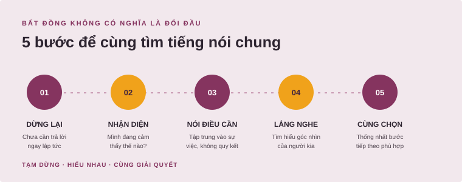

“Bạn lúc nào cũng vô trách nhiệm, chẳng bao giờ làm đúng hẹn!”
KỸ NĂNG GIAO TIẾP · CHUYÊN ĐỀ 02
Một nhịp dừng.
Một cách nói khác.
Khi cảm xúc lên cao, tạm dừng giúp ta có thêm lựa chọn — thay vì để cơn nóng giận chọn lời thay mình.
Khám phá tình huống Một kỹ năng nhỏ, tạo khác biệt lớn trong cuộc trò chuyện.
VÌ SAO CẦN TẠM DỪNG?
Đừng để cảm xúc
nói thay điều mình cần.
Trong một cuộc bất đồng, cơ thể có thể căng lên và ta dễ nói điều khiến người kia phòng thủ. Tạm dừng không có nghĩa là né tránh hay im lặng trừng phạt; đó là khoảng nghỉ ngắn để nhận ra cảm xúc, hiểu điều mình muốn truyền đạt và chọn lời phù hợp hơn.
Xem cách sử dụng websiteTHỬ ÁP DỤNG NGAY
Khoảng dừng
5 bước
Không cần câu trả lời hoàn hảo. Chỉ cần đủ bình tĩnh để chọn bước tiếp theo.
- 01
Dừng lại
Nhận ra mình đang căng thẳng; chưa cần trả lời ngay.
- 02
Thở chậm
Thả lỏng vai, hít thở vài nhịp để cơ thể dịu xuống.
- 03
Gọi tên cảm xúc
Thử tự hỏi: “Mình đang giận, lo hay thất vọng?”
- 04
Chọn điều muốn nói
Tập trung vào sự việc và nhu cầu, thay vì quy kết con người.
- 05
Mời cùng trao đổi
Nói rõ ràng, rồi dành chỗ để lắng nghe góc nhìn của nhau.
ĐỔI CÁCH NÓI
Từ phán xét
đến chia sẻ.
Một câu nói bắt đầu bằng điều mình cảm nhận thường dễ mở ra cuộc trò chuyện hơn là gán nhãn cho người khác.
“Mình đang lo vì phần việc chưa xong. Bạn cho mình biết khi nào có thể hoàn thành được không?”
GHI NHỚ NHANH
Bất đồng không có nghĩa là đối đầu.
Đi từng bước để giữ cuộc trò chuyện tập trung vào vấn đề và hướng giải quyết.

THỰC HÀNH QUA TÌNH HUỐNG
Nếu là bạn, bạn sẽ phản hồi thế nào?
Chọn một tình huống quen thuộc và xem thử một cách diễn đạt khác.
Thử tương tác